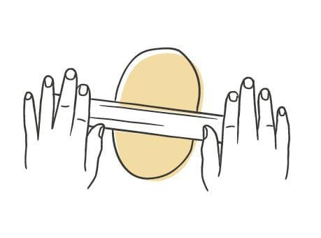
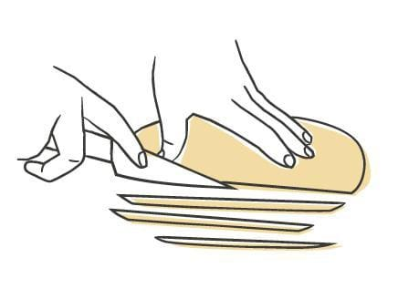
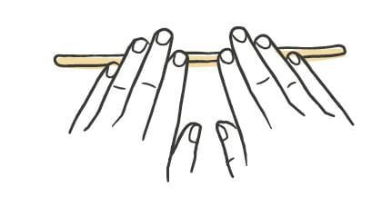
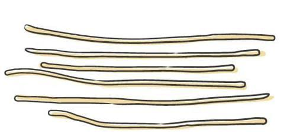
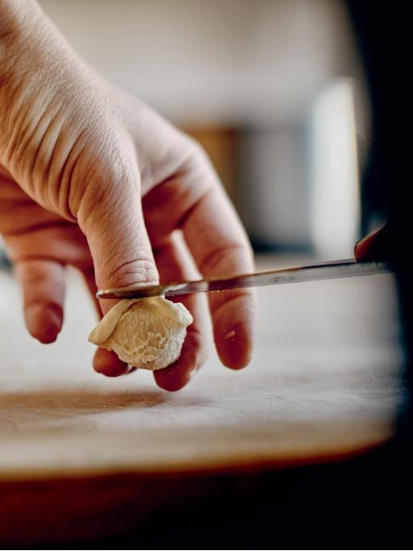
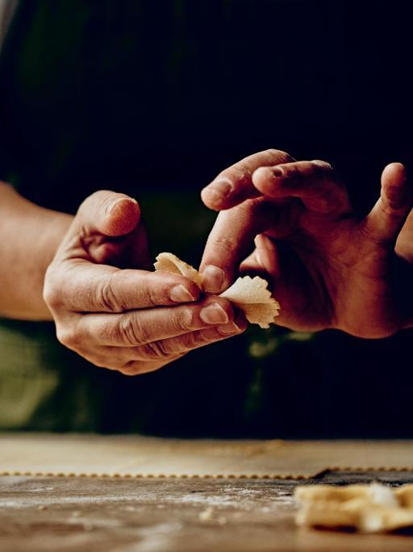

Pasta / Shapes
Pici
- Dough
- Egg Dough
- Source
- Pasta, Missy Robbins
- Formed
- strand
- Region
- Tuscany around Siena and Grosseto; bringoli near Arezzo; umbrici, umbricelli, or umbrichelli in Umbria; umbrichelli or lombrichetti in Lazio
Shaping






Method
- Make an egg-based dough. Dust a wooden board with a little 00 flour. Line a sheet pan with parchment, then dust the parchment with semolina.
- Quarter the dough. Work one piece and keep the rest under plastic wrap or a towel.
- Dust the piece with 00 flour and roll it out with a rolling pin into an oval about 5 inches long and 1/4 inch thick.
- Turn the oval so its long side faces you. Starting at the near edge and working back, cut it into strips 1/4 inch wide. The strips will not all be 5 inches long, which is fine.
- Lay one strip with its long side facing you. Set the fingertips of both hands together at its midpoint and roll back and forth, walking your hands apart toward the ends. Add 00 flour to the board as needed, but sparingly, or you lose the friction the roll depends on.
- Keep rolling under light pressure until the strand is 16 to 18 inches long, about the gauge of thick spaghetti. If you snap it in the middle, cut it clean and roll the two halves separately.
- Dust the strands generously with 00 flour, shake them loose, and lay them on the sheet pan. Work through the rest of the strips.
- Repeat from step 3 with the remaining dough.
- To hold it, wrap the pan in plastic and refrigerate up to 24 hours.
Notes
- Dimensions run a 5-inch by 1/4-inch-thick oval, cut into 1/4-inch strips, each rolled out to a 16-to-18-inch strand.
- No special tool. A rolling pin, a knife, and hands.
- No drying time. Rolling the strands takes long enough that they are ready to cook straight off the board.
- Work slowly and keep the board barely floured. Too much flour and too fast a hand both break the strand mid-roll.
- The strands come out irregular, which is the point. This is a thick hand-rolled spaghetti, not an extruded one.
- Traditionally 00 flour, water, oil, and salt; a northern-style egg dough is now common and gives a chewier, more flavorful strand.
- Refrigerator limit is 24 hours.
- Sturdy enough for minimal sauces, but best with a heavy ragù.